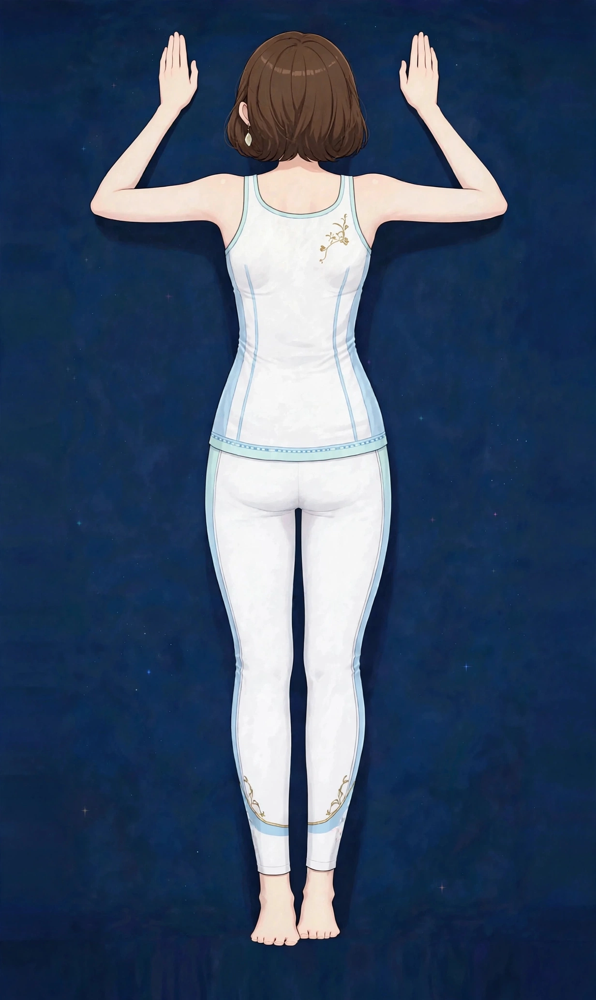

背中の張りとラインのケア｜肩甲骨を動かす習慣美容ケア・パーツ別

自分では見えない背中は、姿勢の印象を大きく左右する部位です。背中の張りの背景と、肩甲骨を動かす習慣の作り方を紹介します。
#背中 ライン ケア#肩甲骨 動かす#背中 張り ほぐす#背中 美容整体
背中が張る仕組み
背中の張りは、肩甲骨の間にある筋肉（菱形筋・僧帽筋中部）が、猫背姿勢で引き伸ばされた状態が続くことと関係します。背骨に沿う筋肉も、姿勢を保つために休みなく働いています。
前側の胸の筋肉の短縮とセットで起こるため、背中だけを揉むのではなく前後のバランスで見ることが大切です。
肩甲骨を動かす習慣
壁に背中をつけて腕を上下させる「壁エンジェル」のような動きや、肩甲骨を寄せるエクササイズは、背中の筋肉をバランスよく使う練習になります。
入浴で背中まで温めることも、張り感のケアの基本です。シャワーだけで済ませがちな方は、週に数回でも湯船の時間を作ってみてください。
当店でのケア
当店のオイルマッサージでは、手のひら全体で背中を大きくほぐしながら、肩甲骨の動きを確認してケアします。自分では手の届かない背中こそ、施術で任せていただきたい部位です。
関連するお悩みページ
関連する経絡ページ
ほかのブログ記事
さらに学びたい方へ：現場で使われる専門書（PR）
当店の施術でも参考にしている専門書です。体の仕組みをもう少し知りたい方へ。


※本ブロックのリンクはAmazonアソシエイト・プログラムおよび楽天アフィリエイトによる広告リンクです。使用感の保証をするものではありません。